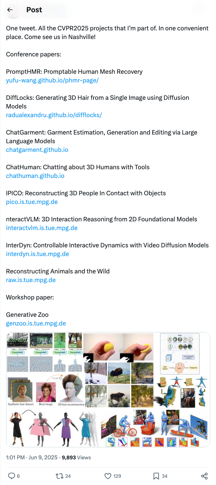
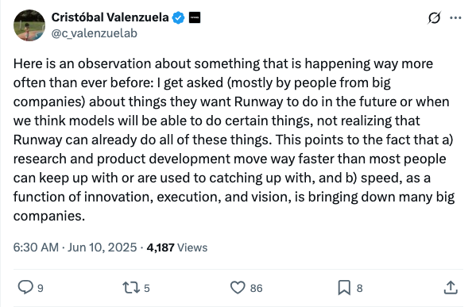
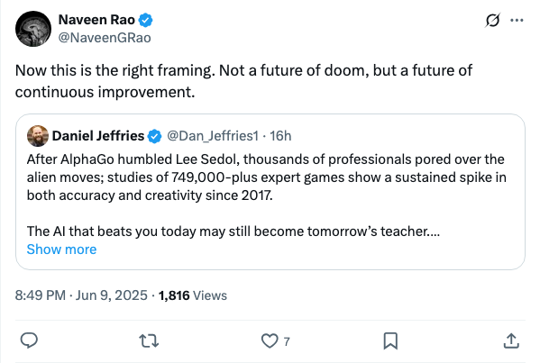
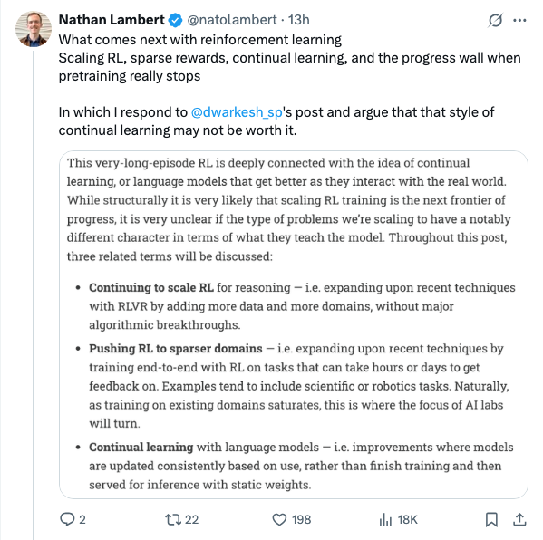
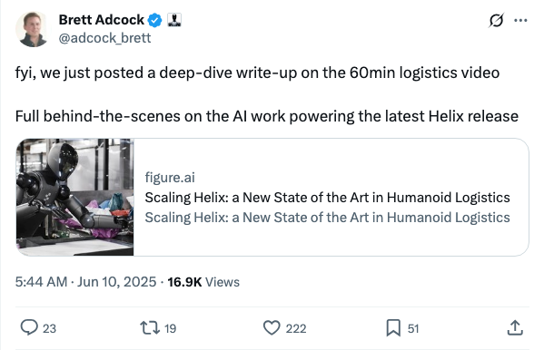
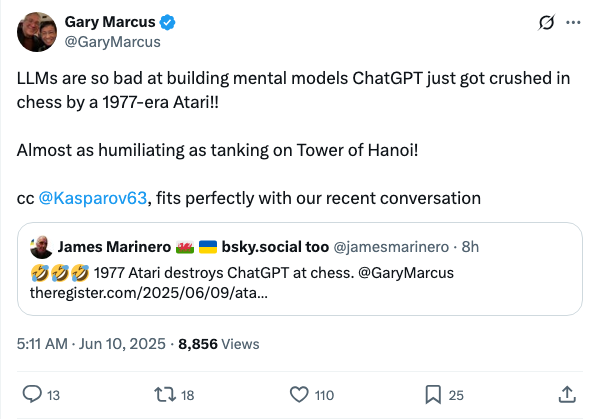
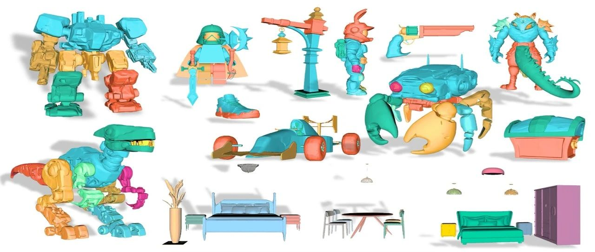
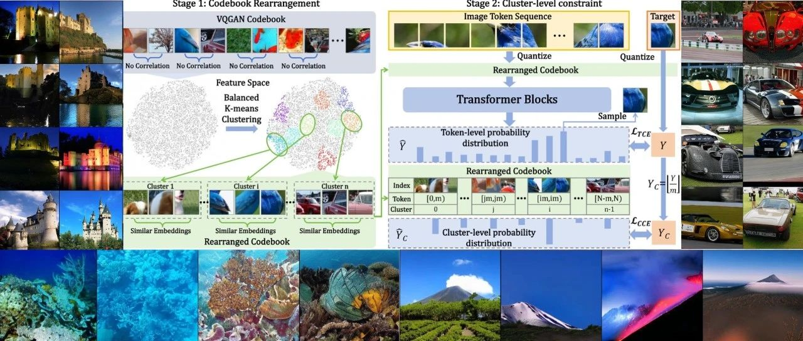
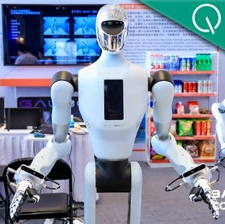

Twitter
Michael_J_Black_公布CVPR2025多项计算机视觉研究项目
Published: 2025-06-09T05:01:18.000Z

知名学者Michael Black在推特上集中展示了其团队参与的CVPR 2025多项前沿研究项目。这些项目涵盖了计算机视觉和3D领域，包括可提示人体网格恢复、基于扩散模型的3D头发生成、大语言模型驱动的服装估计与编辑、3D人机交互、3D人物与物体接触重建、基于2D基础模型的3D交互推理、视频扩散模型控制的交互动力学以及动物3D重建等。此外，还提及了一篇研讨会论文。这些研究成果将在CVPR 2025会议上展示，体现了团队在计算机视觉前沿领域的广泛贡献。
c_valenzuelab_Runway能力被低估：创新速度超越大公司认知
Published: 2025-06-09T22:30:53.000Z

Cristóbal Valenzuela指出，大型企业常询问Runway未来功能，却不知其已具备。这反映出研发速度远超多数人认知，创新、执行与愿景的快速迭代正冲击传统大公司，使其难以跟上技术前沿。
NaveenGRao_AI作为教师促进围棋领域持续进步
Published: 2025-06-09T12:49:38.000Z

Naveen Rao引用Daniel Jeffries的观点，强调人工智能并非带来末日，而是促进持续进步的工具。推文指出，自AlphaGo击败李世石后，围棋界专业人士深入研究其“异类”棋步，导致自2017年以来，围棋的准确性和创造力均持续提升。这表明，今日击败人类的AI，明日可能成为人类的老师，预示着AI在推动人类能力发展方面的积极作用。
natolambert_探讨强化学习未来与持续学习的挑战
Published: 2025-06-09T15:46:56.000Z

知名研究员Nathan Lambert针对Dwarkesh Patel的观点，深入探讨了强化学习（RL）的未来发展。他指出，RL面临规模化、稀疏奖励以及预训练停止后的“进步瓶颈”等关键挑战。Lambert特别提出，某种形式的持续学习可能并非最优解，引发了对当前RL研究路径和潜在方向的深入思考。此推文为RL领域的技术动态提供了新的视角。
adcock_brett_Figure AI发布人形机器人Helix物流应用深度解析
Published: 2025-06-09T21:44:53.000Z

Brett Adcock宣布Figure AI已发布一篇深度文章，详细解析了其人形机器人Helix在物流领域的最新进展。该文章基于一段60分钟的物流视频，深入探讨了驱动最新Helix版本的人工智能技术，展示了人形机器人在物流应用中如何达到新的艺术级水平，为行业带来突破性解决方案。
GaryMarcus_大模型棋艺受挫：ChatGPT不敌1977年雅达利国际象棋程序
Published: 2025-06-09T21:11:31.000Z

知名人工智能研究员Gary Marcus发推指出，大型语言模型（LLMs）在构建心智模型方面表现不佳。他以ChatGPT在国际象棋中被1977年的雅达利程序击败为例，强调了这一局限性，并将其与之前在汉诺塔问题上的失败相提并论。Marcus认为这进一步证明了当前LLMs在复杂推理和规划能力上的不足，引发了对大模型真实智能水平的讨论。
wechat
庖丁解牛 | CMU&北大发布「全球首个结构化3D模型」，单图秒建{可分解3D部件/3D场景}
Published: 2025-06-09T23:46:00.000Z

卡内基梅隆大学与北京大学联合发布了名为PartCrafter的全球首个结构化3D生成模型。该模型能够从单一RGB图像中联合合成多个语义有意义且几何上不同的3D网格，实现了单图秒建可分解3D部件及复杂3D场景。与现有方法不同，PartCrafter采用统一的生成架构，无需预分割输入，通过组合潜在空间和局部-全局去噪变换器，实现对3D零件的端到端感知生成。这一创新突破为3D资产的结构化生成提供了高效解决方案，有望在计算机图形学和AI领域带来广泛应用前景。
CVPR 2025 | 训练效率提升42%！上交&腾讯优图&浙大发布IAR：打破LLM视觉生成瓶颈
Published: 2025-06-09T16:36:24.000Z

上海交通大学、腾讯优图和浙江大学联合发布了IAR，这是一种改进的自回归视觉生成方法，旨在解决大型语言模型（LLM）在视觉生成中面临的瓶颈。该研究深入探讨了语言与视觉的本质差异，发现视觉特征空间中的相关性可用于提升生成稳定性与鲁棒性。IAR核心创新包括：通过平衡k-means聚类对视觉码本进行重排，确保簇内视觉特征高度相似；以及引入面向簇的交叉熵损失，引导模型预测目标Token所在的簇，从而保证即使预测Token有偏差，生成图像仍能保持高质量。实验结果表明，IAR显著提升了基于自回归的视觉生成模型的训练效率（最高达42%）和生成质量，并在LlamaGen和VAR等现有框架上展现出优越性能和广泛适用性，为自回归视觉生成领域提供了新思路。
双重突破：全球首个零售VLA大模型来了！开源OpenWBT让机器人遥操门槛暴降！
Published: 2025-06-09T05:25:20.000Z

文章报道了银河通用机器人在2025北京智源大会上的重大突破。该公司发布了全球首个面向零售行业的端到端具身VLA大模型GroceryVLA，该模型在复杂商超环境中实现了自主、精准的货架取货，全程无需遥控或预采数据，展现出卓越的零样本泛化能力与商业落地潜力。同时，银河通用还开源了OpenWBT，这是全球首款全开源、多机型、跨虚实的人形机器人全身遥操作系统，极大降低了人形机器人遥操门槛，支持全身动作协调，旨在推动具身智能技术开放共享与产业化进程。这些成果标志着具身智能正从实验室走向广泛应用，加速机器人商业化落地。
3B超越DeepSeek，大模型终于理解时间了！Time-R1一统过去/未来/生成
Published: 2025-06-09T04:45:26.000Z
伊利诺伊大学香槟分校研究团队发布Time-R1，成功解决大语言模型时间理解难题。该3B参数模型通过三阶段课程强化学习及动态奖励机制，实现对过去理解、未来预测及创造性生成的大一统。Time-R1在基础时间理解任务上超越DeepSeek-V3等巨型模型，并在未来事件预测和零样本创意生成方面表现卓越，展现强大泛化能力。此项研究为构建具备时间意识的AI提供了高效路径，并全面开源模型、代码及大型数据集，推动了该领域发展。
影视级3D生成新王：Direct3D-S2全面开源！8块GPU超越闭源登顶HF
Published: 2025-06-09T04:45:26.000Z
DreamTech推出的Direct3D-S2 3D大模型登顶HuggingFace 3D建模应用趋势榜，并在综合榜单位列第四。该模型仅需8张GPU训练，却能实现影视级高精细度3D模型生成，效率远超数百张GPU训练的闭源商用模型，token吞吐量提升64倍。其核心创新在于空间稀疏注意力机制（SSA）及适配SSA的全新架构，有效解决了高分辨率3D生成中的效率与精度瓶颈。Direct3D-S2在多项关键指标和盲测中全面超越现有开源及多数闭源模型，展现出卓越的细节还原与几何精度。该项目已全面开源并采用MIT协议，被誉为目前最强的开源3D生成大模型，推动了3D生成技术的普及化与工业级应用。
CVPR 2025 Highlight｜AdaCM2：首个面向超长视频理解的跨模态自适应记忆压缩框架
Published: 2025-06-09T04:34:28.000Z
得克萨斯大学阿灵顿分校研究团队提出AdaCM2框架，旨在解决多模态大模型在超长视频理解中面临的显存瓶颈与冗余信息干扰难题。作为首个支持超长视频理解的跨模态记忆压缩框架，AdaCM2通过引入跨模态注意力驱动的层级记忆压缩策略，有效利用帧内注意力稀疏性和层间语义冗余性，仅保留对文本提示最有意义的视觉信息。该研究已被CVPR 2025接收并荣获Highlight论文，为多模态模型赋予了可控的长时记忆能力，对视频问答、视频摘要等未来应用具有重要意义，推动了长视频智能理解技术的发展。
huggingface
HASHIRU：用于混合智能资源利用的分层智能体系统
Published: 2025-06-01T17:33:16.000Z

大型语言模型（LLM）的快速发展正在推动自主多智能体系统（MAS）的开发。然而，当前的框架通常缺乏灵活性、资源感知能力、模型多样性以及自主工具创建能力。本文介绍了一种新颖的MAS框架——HASHIRU（用于混合智能资源利用的分层智能体系统），旨在增强灵活性、资源效率和适应性。HASHIRU的特点是设有一个“CEO”智能体，能够根据任务需求和资源限制（成本、内存）动态管理和实例化专业的“员工”智能体。其混合智能优先使用较小的本地LLM（通过Ollama），同时在必要时灵活利用外部API和更大的模型。一个包含招聘/解雇成本的经济模型促进了团队的稳定性和高效的资源分配。该系统还包括自主API工具创建和记忆功能。在学术论文评审（58%成功率）、安全评估（JailbreakBench子集上100%）和复杂推理（在GSM8K上超越Gemini 2.0 Flash：96% vs. 61%；JEEBench：80% vs. 68.3%；SVAMP：92% vs. 84%）等任务上的评估，证明了HASHIRU的能力。案例研究表明，它通过自主成本模型生成、工具集成和预算管理实现了自我改进。HASHIRU通过动态分层控制、资源感知混合智能和自主功能扩展，为构建更健壮、高效和适应性强的MAS提供了一种有前景的方法。源代码和基准测试分别可在https://github.com/HASHIRU-AI/HASHIRU和https://github.com/HASHIRU-AI/HASHIRUBench获取，实时演示可根据请求在https://hashiruagentx-hashiruai.hf.space上查看。
CodeContests+：面向竞技编程的高质量测试用例生成
Published: 2025-06-06T07:29:01.000Z

竞技编程因其高推理难度和精确的正确性反馈，已成为训练和评估大型语言模型（LLMs）推理能力的关键任务。然而，尽管大量公共问题数据（如问题陈述和解决方案）可供获取，但这些问题的测试用例通常难以获得。因此，测试用例生成是构建大规模数据集的必要任务，且测试用例的质量直接决定了评估的准确性。在本文中，我们引入了一个基于LLM的智能体系统，用于为竞技编程问题创建高质量的测试用例。我们将此系统应用于CodeContests数据集，并提出了一个具有改进测试用例的新版本，命名为CodeContests+。我们评估了CodeContests+中测试用例的质量。首先，我们使用172万个带有通过/失败标签的提交来检验这些测试用例在评估中的准确性。结果表明，CodeContests+比CodeContests实现了显著更高的准确性，尤其是在真阳性率（TPR）方面有显著提高。随后，我们在LLM强化学习（RL）中的实验进一步证实，测试用例质量的改进为RL带来了显著优势。
MORSE-500：一个可编程控制的视频基准，用于压力测试多模态推理
Published: 2025-06-05T19:12:45.000Z

尽管视觉-语言模型（VLMs）取得了快速进展，但当前用于多模态推理的基准在三个关键维度上存在不足。首先，它们过度依赖静态图像，未能捕捉真实世界环境的时间复杂性。其次，它们狭隘地专注于数学问题解决，忽视了鲁棒多模态智能所需的更广泛推理技能——包括抽象、物理、规划、空间和时间能力。第三，许多基准很快达到饱和，为诊断故障模式或衡量持续进展提供的空间有限。我们引入了MORSE-500（多模态推理压力测试环境），这是一个视频基准，由500个完全脚本化的片段组成，其中包含涵盖六个互补推理类别的问题。每个实例都通过确定性Python脚本（通过Manim、Matplotlib、MoviePy）、生成式视频模型和精选真实素材进行程序化生成。这种脚本驱动的设计允许对视觉复杂性、干扰物密度和时间动态进行精细控制——从而使难度能够随着模型的改进而系统地扩展。与一旦饱和就过时的静态基准不同，MORSE-500旨在发展：其可控的生成管道支持创建任意具有挑战性的新实例，使其非常适合压力测试下一代模型。对包括当时最强的Gemini 2.5 Pro和OpenAI o3以及强大的开源模型在内的最先进系统进行的初步实验表明，所有类别都存在显著的性能差距，尤其是在抽象和规划任务中存在巨大不足。我们发布了完整的数据集、生成脚本和评估工具，以支持透明、可复现和前瞻性的多模态推理研究。
PartCrafter：通过组合式潜在扩散Transformer进行结构化3D网格生成
Published: 2025-06-05T20:30:28.000Z

我们引入了PartCrafter，这是首个结构化3D生成模型，能够从单一RGB图像中联合合成多个语义有意义且几何上独特的3D网格。与现有方法（它们要么生成单一整体3D形状，要么遵循两阶段流水线，即先分割图像再重建每个片段）不同，PartCrafter采用了一种统一的、组合式的生成架构，不依赖于预分割的输入。在单一图像的条件下，它同时对多个3D部件进行去噪，从而实现了个体对象和复杂多对象场景的端到端部件感知生成。PartCrafter建立在经过预训练的3D网格扩散Transformer (DiT)之上，该DiT在完整对象上进行训练，并继承了预训练权重、编码器和解码器，同时引入了两项关键创新：(1) 一个组合式潜在空间，其中每个3D部件由一组解耦的潜在token表示；(2) 一种分层注意力机制，它实现了在单个部件内部和所有部件之间的结构化信息流，确保了全局一致性，同时在生成过程中保留了部件级别的细节。为了支持部件级别的监督，我们通过从大规模3D对象数据集中挖掘部件级别标注，策划了一个新数据集。实验表明，PartCrafter在生成可分解3D网格方面优于现有方法，包括输入图像中不直接可见的部件，这展示了部件感知生成先验在3D理解和合成方面的强大能力。代码和训练数据将发布。
3DFlowAction：从三维流世界模型中学习跨具身操作
Published: 2025-06-06T16:00:31.000Z

操作长期以来一直是机器人面临的挑战性任务，而人类可以毫不费力地执行与物体的复杂交互，例如将杯子挂在杯架上。一个关键原因是缺乏用于教授机器人操作技能的大型统一数据集。当前的机器人数据集通常在简单场景中记录机器人不同动作空间中的动作。这阻碍了机器人在不同场景中为不同机器人学习统一且鲁棒的动作表示。观察人类如何理解操作任务，我们发现理解物体应如何在三维空间中移动是指导动作的关键线索。这条线索与具身无关，适用于人类和不同的机器人。受此启发，我们旨在从人类和机器人操作数据中学习一个三维流世界模型。该模型预测交互物体在三维空间中的未来运动，从而指导操作的动作规划。具体而言，我们通过一个移动物体自动检测管道合成了一个名为 ManiFlow-110k 的大规模三维光流数据集。然后，一个基于视频扩散的世界模型从这些数据中学习操作物理，生成基于语言指令的三维光流轨迹。利用生成的三维物体光流，我们提出了一种流引导渲染机制，该机制渲染预测的最终状态并利用 GPT-4o 评估预测流是否与任务描述对齐。这赋予了机器人闭环规划能力。最后，我们将预测的三维光流视为优化策略的约束，以确定机器人操作动作的片段。广泛的实验表明，该方法在各种机器人操作任务中具有强大的泛化能力，并且无需特定硬件训练即可实现可靠的跨具身适应。
前缀分组器：通过共享前缀前向传播实现高效GRPO训练
Published: 2025-06-05T09:13:37.000Z

组相对策略优化（GRPO）通过计算共享相同输入前缀的候选输出之间的相对比较梯度来增强策略学习。尽管GRPO有效，但在处理长共享前缀时会引入大量的计算开销，因为每个组成员都必须冗余编码。这种低效率在长上下文学习场景中成为主要的扩展性瓶颈。我们提出了前缀分组器（Prefix Grouper），这是一种高效的GRPO训练算法，通过共享前缀前向传播策略消除了冗余的前缀计算。具体而言，通过将自注意力重构为两部分，我们的方法使得共享前缀只需编码一次，同时保持完全可微分性并与端到端训练兼容。我们提供了理论和经验证据，表明前缀分组器与标准GRPO在训练上是等效的：它产生相同的前向输出和反向梯度，确保优化动态和最终策略性能保持不变。经验上，我们的实验证实前缀分组器在显著降低训练计算成本的同时，尤其是在长前缀场景中，取得了稳定一致的结果。所提出的方法是完全即插即用的：它与现有的基于GRPO的架构兼容，并且可以作为直接替代品无缝集成到当前的训练流程中，无需结构修改，只需对输入构建和注意力计算进行最小的更改。前缀分组器使得在相同计算预算下可以使用更大的组大小，从而提高了GRPO在更复杂任务和更大模型上的可扩展性。代码现已在https://github.com/johncaged/PrefixGrouper提供。